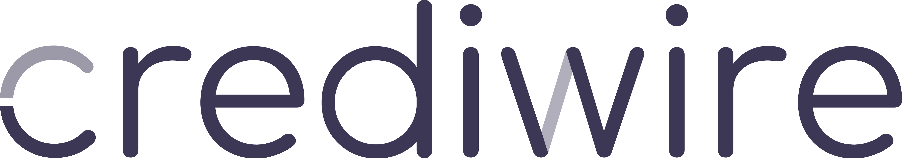

Crediwire leverer live regnskabsdata, struktureret, valideret og dokumenteret.
Og andre finansielle arbejdsgange — alle på samme datagrundlag.
Én fælles finansiel virkelighed.
Bygget til det daglige arbejde, der allerede finder sted. Bare på et stærkere grundlag.
Vi sælger ikke data.
Vi sælger tillid.
Den finansielle dagligdag er fragmenteret. Det er ikke en provokation. Det er en observation, der gentager sig på tværs af de organisationer, vi taler med.
Revisorer bruger uger på at trække data ud af klienternes bogføringssystemer. Eksportere. Mappe konti til en intern struktur. Stemme af. Identificere fejl. Bede klienten om opklaringer. Vente på svar. Lave det igen.
Det reelle revisionsarbejde — det faglige, det vurderende, det rådgivende — kommer først, når dataarbejdet er ovre. Og dataarbejdet er aldrig helt ovre.
Banker står over for samme problem fra den anden side. En kreditbeslutning kræver et opdateret billede af kundens økonomi. I praksis bliver den taget på baggrund af et regnskab, der er to til seks måneder gammelt. Eventuelle perioderegnskaber er manuelle, ikke valideret, og ofte i et format, der ikke kan sammenlignes med tidligere data eller med andre kunder i porteføljen.
Virksomhederne selv — særligt små og mellemstore — sidder med et bogføringssystem, en revisor, en bank, en CFO eller en bogholder, og fire forskellige forståelser af, hvad tallene faktisk siger. Når der skal træffes en beslutning — en investering, en ansættelse, en udvidelse, en omkostningsbesparelse — er det sjældent klart, hvilket tal der skal bruges.
Alt det her sker, selvom data findes. Data er bogført. Data er sendt. Data er gemt. Data er sågar tilgængelig via API i de fleste systemer. Den er bare ikke brugbar.
Den er ikke struktureret. Den er ikke valideret. Den er ikke sammenlignelig på tværs. Den er ikke dokumenteret på den måde, der skal til, før den kan indgå i et stykke fagligt arbejde, en kreditvurdering, en beslutning.
Resultatet er manuelt arbejde. Mistede uger. Genberegninger. Versioner. Tab af tillid mellem aktørerne. Og en daglig følelse af, at meget tid bliver brugt på det forkerte.
Det er ikke et softwareproblem. Det er et infrastrukturproblem.
Forestil dig, at regnskabet ikke er en fil, der bliver sendt frem og tilbage. Men en levende virkelighed, alle parter har adgang til.
Bogføres en postering i virksomhedens system, ved Crediwire det. Datagrundlaget opdateres med det samme. Strukturen er allerede mappet til en ensartet kontoplan. Reklassifikationer er dokumenteret. Kvalitetskontroller er kørt og bestået — eller markeret med præcis beskrivelse af, hvad der mangler, og hvorfor.
Revisor ser ikke et udtræk. Revisor ser en levende virksomhed. Det er det samme grundlag, der ligger til grund for analyse, rapportering og erklæringer.
Banken ser ikke et regnskab fra sidste kvartal. Banken ser et opdateret billede af kundens økonomi, struktureret på samme måde som alle andre kunder i porteføljen. Kreditbeslutninger kan bygges på data, der reelt afspejler virkeligheden — ikke et øjebliksbillede fra et halvt år tilbage.
Virksomhedens ledelse ser ikke fire forskellige tal. De ser ét tal — det samme, som revisor og bank ser. Når der skal træffes en beslutning, er den ikke en gætteleg.
Det er ikke en fremtidsvision. Det er det, Crediwire leverer.
Vi kalder det finansiel infrastruktur, fordi det er det, det er. Infrastruktur er det grundlag, andet arbejde står på. Det er ikke selve arbejdet — det er det, der gør arbejdet muligt. På samme måde som veje gør transport muligt, eller som strømnet gør elektrificering muligt, gør Crediwire moderne finansielt arbejde muligt.
Når det grundlag er på plads, kan alt det interessante arbejde ske ovenpå. Analyser. Rapporter. Erklæringer. Beslutninger. Rådgivning. Kreditvurdering. Det er dér, mennesker bruger deres faglighed. Det er dér, værdien faktisk skabes.
Vores opgave er at sørge for, at det grundlag, de står på, er stærkt nok.
Tillid er produktet.
Alt andet er infrastruktur.
Crediwire er bygget til at fungere på tværs af tre fag, der hver især har deres egen logik, deres egen tidshorisont og deres egen forståelse af, hvad regnskabsdata skal kunne. Alligevel arbejder de på samme virkelighed. Det er det, vi forsøger at gøre eksplicit.
Revisorarbejdet bygger på et fundament: at det datagrundlag, der ligger til grund for analyse, rapportering og erklæringer, er korrekt, fuldstændigt og dokumenteret.
I dag er det fundament noget, revisor selv bygger op fra grunden, hver eneste gang. Det starter med et udtræk fra klientens bogføringssystem, fortsætter med afstemninger, mapping, reklassifikationer og kvalitetstjek, og ender — efter mange timers manuelt arbejde — med et datagrundlag, der kan arbejdes videre med.
Crediwire vender det om. Datagrundlaget er allerede der, før arbejdet begynder. Klientens bogføring er forbundet, mappet, valideret og dokumenteret. Revisoren starter ikke med en eksportfil. Revisoren starter med et fagligt spørgsmål.
Det giver mere ensartet dokumentation. Hver klient har samme strukturelle grundlag. Reklassifikationer er sporbart dokumenteret. Kvalitetskontroller er kørt og noteret. Når der bliver spurgt — af en partner, af en kvalitetsansvarlig, af en myndighed — kan svaret findes, vises og forklares.
Det giver et stærkere bagland for analyse, rapportering, kvalitetssikring og erklæringsarbejde. Sammenligning på tværs af klienter, perioder og brancher bliver mulig, fordi grundlaget er det samme. Nøgletal bliver direkte sammenlignelige. Trends i porteføljen bliver synlige.
Det skalerer. Den samme revisor kan håndtere flere klienter, uden at kompleksiteten vokser tilsvarende. Den samme partner kan stå på mål for flere erklæringer, fordi grundlaget er ensartet. Vækst i revisionshuse handler i sidste ende om kapacitet — og kapacitet skabes ved at fjerne dobbeltarbejde, ikke ved at ansætte flere til at lave det samme manuelle arbejde.
Det styrker rådgivningen. Når tid frigøres fra afstemning, udtræk og fejlfinding, kan den lægges der, hvor revisoren reelt gør en forskel: i fagligheden, i vurderingen, i samtalen med klienten. Det er det arbejde, klienterne betaler for. Det er det arbejde, der gør forskellen mellem en revisor og et udtræk.
Crediwire er ikke et regnskabsprogram. Crediwire er det grundlag, regnskabsprogrammet bliver brugbart på.
Bankens erhvervsudlån står og falder på kvaliteten af kreditvurderingen. Vurderingen står og falder på kvaliteten af det datagrundlag, den bygger på.
I dag er datagrundlaget i de fleste tilfælde et årsregnskab — modtaget som PDF, ofte flere måneder efter at det er afsluttet. Eventuelle perioderegnskaber er manuelle, ofte ikke valideret, og strukturelt forskellige fra det årsregnskab, banken har i forvejen. Sammenligning er svær. Trends er svære at se. Risikobilledet er bagudrettet.
Crediwire forbinder kundens bogføring direkte til bankens vurderingsproces. Datagrundlaget er opdateret. Strukturen er ensartet på tværs af kunder. Kvalitetskontroller er kørt og dokumenteret. Banken arbejder ikke på et PDF-udtræk fra februar. Banken arbejder på det, der står i bogføringen i går.
Det ændrer kreditprocessen. Vurderinger kan opdateres løbende. Trigger-events — markante ændringer i omsætning, likviditet, kapitalforhold — kan opdages tidligt. Advarselssignaler bliver synlige, før de bliver til problemer, der skal håndteres reaktivt.
Det ændrer kundedialogen. Når bank og virksomhed ser samme tal, bliver samtalen om økonomien konkret. Også når den er svær. Diskussioner om kovenanter, om afdragsstruktur, om kreditramme, om vækstkapital sker på et fælles grundlag — ikke på to forskellige versioner af virkeligheden.
Det ændrer porteføljen. Hele kundebasen kan følges samlet. Bevægelser kan ses på tværs. Hvad sker der i en branche? Hvad sker der i en region? Hvilke kunder bevæger sig i hvilken retning? Det bliver ikke længere et spørgsmål, der kræver en uges manuel analyse. Det bliver et opslag.
For banken er Crediwire ikke et nyt kreditsystem. Det er det datagrundlag, kreditsystemet bliver præcist på.
For virksomheder — særligt små og mellemstore — er forholdet til egen økonomi ofte mere distanceret, end det burde være. Bogføringen sker. Regnskabet bliver lavet. Banken får det de skal have. Men det daglige overblik mangler.
Det er ikke fordi viljen ikke er der. Det er fordi infrastrukturen ikke er det. At samle et reelt billede af forretningen kræver, at nogen — typisk CFO, bogholder eller revisor — bruger tid på at hente data ud, sætte det op, beregne nøgletal og forklare dem. Den tid er der sjældent.
Crediwire ændrer det. Tallene er opdaterede. Strukturen er ensartet. Nøgletal er beregnet — hver dag, ikke kun ved kvartal eller årsskifte. Hvis man vil vide, hvordan bruttomargen har udviklet sig de seneste tre måneder, er det et opslag. Ikke et projekt.
Samarbejdet med revisor og bank bliver lettere. Data deles, ikke filer. Spørgsmål kan besvares hurtigt, fordi alle ser det samme. Når revisor stiller et spørgsmål om en specifik konto, behøver man ikke gå tilbage og finde bilag. Når banken vil have en opdatering, er den der allerede.
Beslutninger får et stærkere fundament. Det er sjældent mere data, der mangler i en virksomhed. Det er pålidelig data. Den slags man kan stole på, når man skal vælge mellem to investeringer, vurdere om man kan ansætte en til, eller forhandle med en leverandør om priser.
For virksomheden er Crediwire ikke endnu et system at lære. Det er den rolige, korrekte version af det, der allerede står i bogføringen — gjort tilgængelig, sammenlignelig og brugbar.
Én fælles
finansiel virkelighed.
Crediwire er ikke et stykke software, du skal lære at bruge på en bestemt måde. Det er en infrastruktur, der kører i baggrunden, og som leverer et brugbart datagrundlag til de mennesker og systemer, der har brug for det.
Under motorhjelmen sker der fire ting. De gentages — ikke en gang om måneden, ikke en gang om kvartalet, men hver eneste dag, så snart der bogføres noget i den underliggende virksomhed.
Trin ICrediwire integrerer direkte med de mest udbredte bogføringssystemer. Forbindelsen oprettes én gang og kører derefter i baggrunden. Når en postering bliver bogført — en faktura, en betaling, en lønudbetaling, en omkostning — registreres den med det samme i Crediwire.
Der er ingen filudveksling. Ingen manuelle eksporter. Ingen "version 3 final" i mailen. Datagrundlaget er forbundet til kilden — ikke en kopi af den.
Det betyder også, at sandheden er ét sted. Bogføringen er master. Crediwire læser fra master og leverer det videre i en brugbar form. Vi opfinder ikke en ny virkelighed. Vi gør den eksisterende tilgængelig.
Trin IIKonti fra virksomhedens bogføring mappes automatisk til en ensartet struktur. Det er ikke en standardisering af, hvordan virksomheden bogfører — den må gerne fortsætte præcis som hidtil. Det er en oversættelse af bogføringens interne kontoplan til en fælles, sammenlignelig struktur, alle andre i økosystemet kan arbejde på.
Hvor data ikke er bogført, som det skal læses, kan posteringer reklassificeres centralt. Reklassifikationen er ikke en ændring af bogføringen. Den er et lag ovenpå, der er sporbart dokumenteret. Hver reklassifikation har en begrundelse, en periode og en ansvarlig.
Strukturen er konsistent på tværs af virksomheder, kunder og porteføljer. To virksomheder med vidt forskellige kontoplaner kan pludselig sammenlignes på samme grundlag. Det er forudsætningen for benchmark, for porteføljeoverblik, for ensartede analyser.
Trin IIIKvalitetskontrol kører løbende — ikke ved kvartalsafslutning, ikke ved årsskifte, men hver dag. Crediwire ser efter manglende posteringer, åbne perioder, balanceuoverensstemmelser, atypiske bevægelser og en lang række andre signaler, der typisk indikerer, at der er noget, der skal kigges på.
Når noget bliver markeret, sker det med en konkret beskrivelse. Hvad er der observeret. Hvilken periode. Hvilken konto. Hvilken type kontrol, der har fanget det. Hvor sandsynligt det er at være en reel fejl versus en forventet variation.
Det betyder, at du ikke arbejder på data, du ikke kan stole på. Og hvis noget skal undersøges, ved du præcis, hvad det er, før du går i gang. Du opdager det ikke først, når en rapport bliver afvist eller en erklæring skal trækkes tilbage.
Trin IVDet validerede datagrundlag indgår direkte i de arbejdsgange, der allerede findes. Rapportering. Analyse. Erklæringer. Kreditprocesser. Rådgivning. Beslutninger.
Crediwire erstatter ikke arbejdet. Crediwire erstatter heller ikke det bogføringssystem, du allerede bruger, eller det revisionssystem, dit hus har valgt, eller den kreditmotor, banken kører på. Crediwire leverer det fælles grundlag, alt det andet kan arbejde på.
I praksis betyder det, at dine eksisterende systemer fortsat er der. Men de henter data fra et fælles, validerede grundlag — ikke fra fragmenterede udtræk hver gang. Det er forskellen mellem at bygge på sten og at bygge på sand.
Crediwire er ikke ét enkelt produkt med én enkelt funktion. Det er en infrastruktur, der dækker det meste af det, der skal til for at gå fra bogføring til brugbar finansiel virkelighed. Her er hvad der ligger under motorhjelmen.
Crediwire integrerer med de mest udbredte bogføringssystemer i Danmark og leverer data løbende. Ingen filudveksling, ingen manuelle eksporter, ingen versionsforvirring om hvilken kopi af regnskabet, der er den rigtige.
Forbindelsen oprettes én gang og kører derefter automatisk. Du behøver ikke gøre noget hver gang, der er bogført noget nyt. Det sker af sig selv.
Konti fra virksomhedens bogføring mappes automatisk til en ensartet struktur. Det betyder, at to virksomheder med vidt forskellige kontoplaner kan sammenlignes, vurderes og rapporteres på samme grundlag.
Mappingen er ikke statisk. Når der kommer nye konti til, foreslår Crediwire en mapping baseret på mønstre fra tidligere data. Brugeren kan acceptere eller justere. Mappingen forbedres over tid.
Hvor data ikke er bogført, som det skal læses i en bestemt sammenhæng, kan posteringer reklassificeres centralt. Reklassifikationen følger datagrundlaget og er sporbart dokumenteret.
Det betyder, at en revisor kan reklassificere en omkostning til en anden gruppering uden at ændre på selve bogføringen. Og at samme reklassifikation kan vises og forklares ved senere lejlighed — også om et halvt år, når sammenhængen er glemt.
Crediwire kører løbende kontroller på datagrundlaget. Manglende posteringer, åbne perioder, balanceuoverensstemmelser, atypiske bevægelser og en lang række andre signaler bliver fanget tidligt.
Når en kontrol markerer noget, sker det med konkret beskrivelse: hvilken periode, hvilken konto, hvilken type signal. Det betyder, at det, der skal undersøges, er præcist defineret — og at problemer ikke først dukker op, når det er for sent.
Centrale finansielle nøgletal beregnes på det validerede grundlag. Bruttoavance. Driftsresultat. Likviditet. Soliditet. Afkastningsgrad. Egenkapitalens forrentning. Og en lang række mere.
Nøgletallene er sammenlignelige på tværs af virksomheder, perioder og porteføljer — fordi grundlaget er det samme. Det er forudsætningen for både benchmark, analyse og kreditvurdering.
Hver beregning. Hver reklassifikation. Hver kontrol. Hver mapping-beslutning. Hver godkendelse. Alt sammen dokumenteret og sporbart.
Det betyder, at du ved, hvor tallet kommer fra. Du kan vise det. Du kan stå på mål for det. Også når en revisor, en kreditansvarlig, en bestyrelse eller en myndighed spørger — også længe efter, at du selv har glemt detaljerne.
Crediwire understøtter arbejdet med årsrapporter, så det validerede datagrundlag flyder direkte ind i rapporteringen. Mindre afstemning. Mere kontrol. Bedre dokumentation. Færre versioner i omløb.
Det betyder ikke, at årsrapporten skriver sig selv. Det betyder, at de mange timer, der typisk bruges på at få data klar til selve rapporten, kan bruges på selve rapporten i stedet.
Assistanceerklæringer kan udarbejdes oven på datagrundlaget, så grundlag og erklæring er bundet sammen i ét gennemskueligt forløb.
Det styrker både fagligheden og sporbarheden. Erklæringen står ikke alene som et færdigt dokument — den er forbundet til det datagrundlag, der ligger til grund for den, med fuld dokumentation af, hvad der er kontrolleret og hvordan.
Strukturerede regnskabsdata gør analyse mulig på tværs af virksomheder, brancher og perioder. Du kan stille det samme spørgsmål til mange virksomheder samtidigt og få sammenlignelige svar.
Hvilke virksomheder i porteføljen har haft faldende bruttomargen tre kvartaler i træk? Hvilke har haft stigende kortfristet gæld? Hvilke afviger markant fra deres branchegennemsnit? Den slags spørgsmål bliver til opslag — ikke til projekter.
Rapporter bygger på det fælles datagrundlag. Det samme tal vises ens, uanset hvor i organisationen rapporten produceres, eller hvilken kunde den handler om.
Det betyder, at uoverensstemmelser mellem rapporter — den klassiske "men det stod der ikke i sidste rapport" — ikke længere er en kilde til usikkerhed. Alt bygger på samme grundlag. Forskelle skyldes virkeligheden, ikke datafejl.
For banker leverer Crediwire opdateret, dokumenteret regnskabsdata til kreditprocesser. Vurderinger bygger ikke længere på data, der er flere måneder gamle. Risikobilledet bliver mere reelt — og kan opdateres løbende.
Det betyder kortere sagsbehandling, færre overraskelser sent i forløbet, og en mere dynamisk porteføljeforvaltning, hvor advarselssignaler kan opfanges tidligt og handles på, før de bliver til problemer.
Kunder, klienter og porteføljeselskaber forbindes til samme infrastruktur. Revisor, bank og virksomhed arbejder på samme datagrundlag, hver med deres egen adgang og deres eget formål — uden at sende filer frem og tilbage.
Det er forudsætningen for det meste af det, der gør Crediwire værdifuldt. Når alle parter står på samme grundlag, bliver dialogen mellem dem mere konkret, mere effektiv, og mere tillidsbaseret.
For organisationer med mange klienter eller mange virksomheder under sig samles overblikket ét sted. Du kan se status, kvalitet, frister og afvigelser på tværs af hele porteføljen — i stedet for én kunde ad gangen.
Det er afgørende for revisionshuse, banker, holdingselskaber og andre, der har et fagligt eller forretningsmæssigt ansvar for flere virksomheder samtidig. Det er forskellen mellem at navigere et hus og at navigere én lejlighed.
Når data er sammenlignelig på tværs, kan virksomheder benchmarkes mod brancher og peers. Det giver kontekst til både rådgivning, kreditvurdering og virksomhedens egen forståelse af, hvor den står.
Hvad er et "godt" tal? Det afhænger af branchen, størrelsen, fasen. Benchmark gør den slags vurderinger konkret. Det er ikke længere en mavefornemmelse — det er et tal på et tal.
Crediwire behandler finansielle data og personoplysninger efter dansk og europæisk regulering. Adgange er rollebaserede. Databehandleraftaler er på plads. Krypteret transport og opbevaring følger branchestandard.
Vi behandler det her som den infrastruktur, det er. Og infrastruktur, som mange aktører deler, skal man kunne stole på — ikke kun fagligt, men også sikkerhedsmæssigt, regulatorisk og driftsmæssigt.
Den største fortælling
er kvalitet.
Tid er et resultat. Men det er ikke den største fortælling. Den største fortælling er kvalitet: bedre data, bedre processer, bedre dokumentation, bedre beslutninger.
Når det grundlag er på plads, hjælper Crediwire grundlæggende med tre ting. Det er ikke marketinglove. Det er hvad organisationer typisk får ud af, at deres finansielle data bliver levende.
Når kvalitet og kapacitet stiger, kan revisorer levere mere til flere. Banker kan vurdere flere sager med samme bemanding. Virksomheder kan handle på deres data, mens de stadig er aktuelle.
For revisorer betyder det, at det samme team kan håndtere flere klienter, eller at de samme klienter kan få mere rådgivning. For banker betyder det kortere sagsbehandling og en mere proaktiv porteføljeforvaltning. For virksomheder betyder det, at en investeringsbeslutning ikke skal vente på, at regnskabet er klart — den kan tages på et opdateret grundlag, med en realtidsforståelse af, hvad der er muligt.
Det er ikke vækst gennem flere produkter eller flere kunder. Det er vækst gennem bedre infrastruktur.
Når datagrundlaget er fælles, falder dobbeltarbejdet. Afstemninger, udtræk og manuelle kontroller, der ikke skaber værdi, bliver overflødige eller automatiseres.
I de fleste organisationer går en stor del af det finansielle arbejde med at sikre, at data er der, hvor den skal være, og at den ser ud, som den skal. Crediwire tager den opgave på sig. Det frigør tid — ikke til at fylde med andet arbejde, men til at bruge på det arbejde, der reelt skaber værdi: fagligheden, vurderingen, samtalen, beslutningen.
Det er omkostningsreduktion, der ikke kommer fra at fyre folk. Det er omkostningsreduktion, der kommer fra at lade folk gøre det, de er ansat til.
Når processer er ensartede og dokumenterede, bliver det let at vise, hvad der er gjort, hvorfor det er gjort, og hvordan det er gjort. Til revision. Til myndigheder. Til ledelsen. Til den, der spørger næste gang.
Reguleringen af finansielt arbejde bliver ikke mindre kompliceret. Den bliver mere. ESG-rapportering. Kreditreguleringer. Skattemæssige krav til dokumentation. Nye standarder for kvalitetssikring. Crediwire er ikke et compliance-værktøj. Men det er det datagrundlag, compliance-arbejdet kan bygges på — uden at det skal genopfindes hver gang.
Det er compliance som biprodukt, ikke som projekt. Det er den slags grundlag, der gør, at man kan svare uden at skulle lede.
Tillid til data. Tillid til dokumentationen. Tillid til processen. Tillid til beslutningen. Det er det, alt det andet bygger på.
Uden tillid bliver data endnu en opgave. Endnu en fil, der skal tjekkes. Endnu en version, der skal afstemmes. Endnu en rapport, der skal gennemgås for fejl, før den kan bruges. Det er det daglige arbejde, der dræber organisationer.
Med tillid bliver data et grundlag. Noget, beslutninger kan bygges på. Noget, samtaler kan tages udfra. Noget, faglige vurderinger kan ankres i.
Tillid bygges ikke ved at markedsføre. Den bygges ved at levere et grundlag, der er korrekt, fuldstændigt og dokumenteret — gang på gang, dag efter dag, klient efter klient. Det er det, Crediwire gør.
Det er derfor, vi kalder det finansiel infrastruktur. Ikke fordi det lyder stort. Men fordi det er den rette beskrivelse. Infrastruktur er det, alt andet bygger på. Det er det, der gør moderne samfund muligt. Det er det, der binder fagene sammen.
Vi leverer finansiel infrastruktur. For revisorer, banker og virksomheder. For arbejde, der allerede findes. For beslutninger, der allerede tages.
Bare på et stærkere grundlag.
Med tillid
bliver data et grundlag.
Skriv eller ring. Vi viser gerne, hvordan Crediwire ser ud i jeres arbejde — på jeres data, med jeres systemer og i jeres processer.
Vi tager den fra start: hvordan datagrundlaget ser ud i dag, hvor det bryder ned, og hvordan det kan se ud, når Crediwire er på plads. Ingen lange salgsforløb. Ingen abstrakte løfter. Bare en konkret samtale om jeres virkelighed.
Skriv til os